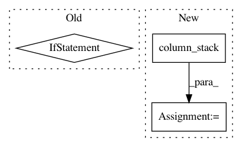

b2b4e260e8fd5784eb5ea2c13c7a3cc8e1cc9fc2,spynnaker/pyNN/models/recording_common.py,RecordingCommon,pynn7_format,#Any#Any#Any#Any#,133
Before Change
pynn7[:, 1] = numpy.tile(times, n_neurons).\
reshape(1, column_length)
pynn7[:, 2] = numpy.transpose(data).reshape(1, column_length)
if data2 is not None:
pynn7[:, 3] = numpy.transpose(data2).reshape(1, column_length)
return pynn7
def _get_recorded_pynn7(self, variable):
if variable == "spikes":
After Change
numpy.tile(times, n_neurons),
numpy.transpose(data).reshape(column_length)))
else:
pynn7 = numpy.column_stack((
numpy.repeat(ids, n_machine_time_steps, 0),
numpy.tile(times, n_neurons),
numpy.transpose(data).reshape(column_length),
numpy.transpose(data2).reshape(column_length)))
return pynn7
def _get_recorded_pynn7(self, variable):
if variable == "spikes":
In pattern: SUPERPATTERN
Frequency: 4
Non-data size: 3
Instances
Project Name: SpiNNakerManchester/sPyNNaker
Commit Name: b2b4e260e8fd5784eb5ea2c13c7a3cc8e1cc9fc2
Time: 2017-12-18
Author: christian.brenninkmeijer@manchester.ac.uk
File Name: spynnaker/pyNN/models/recording_common.py
Class Name: RecordingCommon
Method Name: pynn7_format
Project Name: bashtage/linearmodels
Commit Name: eb47d0eacbb3e3bad905616f8d410ebff8b6a1a9
Time: 2019-03-21
Author: kevin.k.sheppard@gmail.com
File Name: linearmodels/panel/model.py
Class Name: PanelOLS
Method Name: _lsmr_path
Project Name: scipy/scipy
Commit Name: bd72f63f3342bc88cd941bbc41547d6513e089ea
Time: 2018-08-13
Author: pvanmulbregt@users.noreply.github.com
File Name: scipy/special/tests/test_kolmogorov.py
Class Name: TestSmirnovi
Method Name: test_n_equals_1
Project Name: rasbt/mlxtend
Commit Name: 5016a008790087d9cb47e7f91099f3dba7960ee2
Time: 2019-03-14
Author: 36086881+qiagu@users.noreply.github.com
File Name: mlxtend/regressor/stacking_cv_regression.py
Class Name: StackingCVRegressor
Method Name: fit